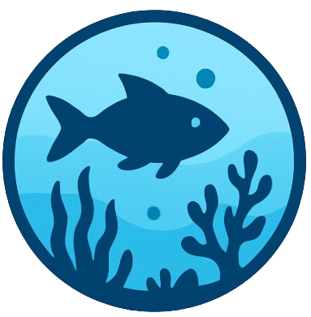
Underwater • A class project
Scroll down into the underwater world
The Underwater Animation
Discover the underwater world by scrolling down this page.
Discover The AnimationFeatures
Images
Filled with clickable images to see what lives down there.
Interesting Information
Full of educational content to learn more about the abyss. Enjoy! (P.S: Not to scale)
Animation
The Sunlit Zone
The ocean's surface layer where sunlight still penetrates, down to about 200 meters.
Epipelagic Zone
0 METERS DEEP

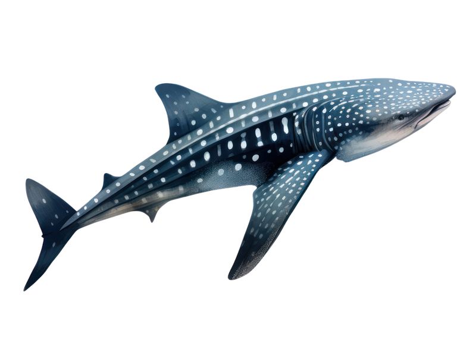
The whale sharks, living in tropical oceans, are known as very dangerous predators due to their height (between 12 to 15 meters). They usually eat small animals such as copepods, shrimp, and other invertebrates, they also eat algae and other marine plant material, small and large fish, mollusks, and like many sharks squid.
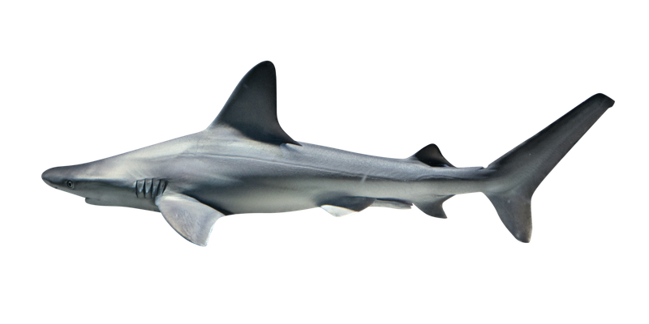
The bull sharks are considered as one of the most dangerous shark species. In fact, they have the ability to live in both salt and freshwater. If they can, it’s because bull sharks are diadromous, they have special glands and kidney functions to help their bodies retain salt while in freshwater
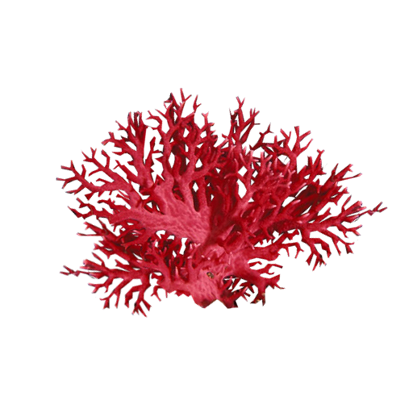
Corals are fascinating marine invertebrates, and they're not plants, they are animals. There are over 6000 species of corals and they can live from 5000 to 10000 years. They live in large groups called colonies, which are made up of numerous individual units known as polyps. Each one has a mouth surrounded by tentacles that are armed with stinging cells, which they use to capture small prey like plankton.

Coral bleaching occurs when corals expel the algae (zooxanthellae) that live in their tissues due to stress, causing them to lose their color.
Without these algae, corals turn white and become weaker, making them more vulnerable to disease and death.
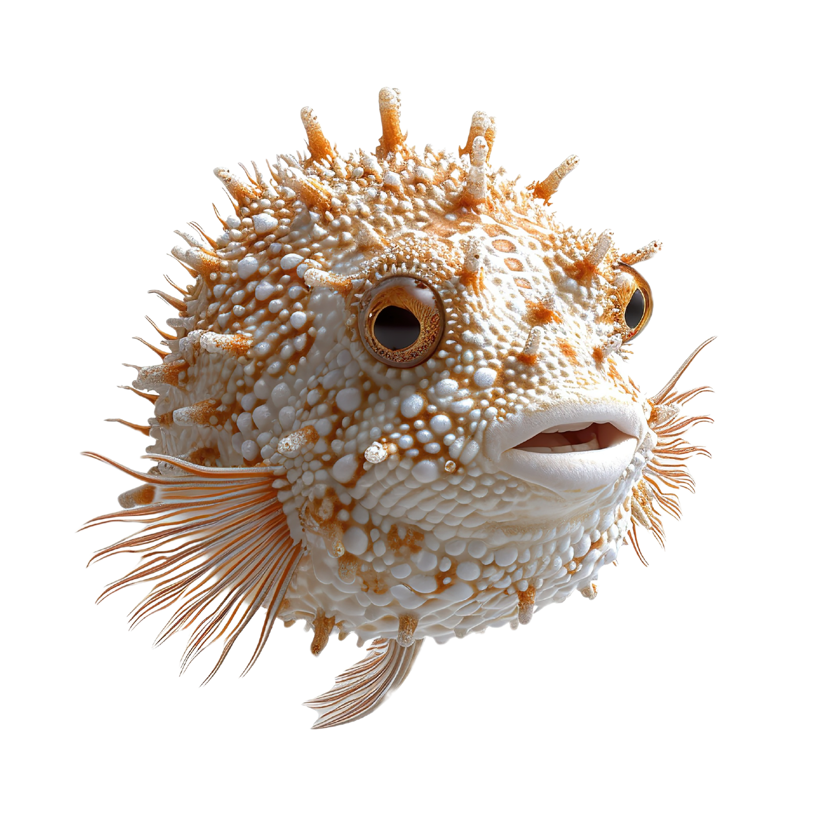
the fugu (or pufferfish) is apart of the Tetraodontidae family (the diverse family of pufferfish and globefish)
The fugu’s primary survival strategy is its ability to "puff up." When threatened, it gulps down massive amounts of water (or air) into its stomach. This rapid expansion transforms the fish into a large, uneatable ball, often revealing tiny hidden spines to further discourage attackers.
Beware, it's poisonous!

The bonnethead sharks, living in the South-American coast, are very small sharks (between 0.61 to 0.91 m). Their diet is very simple, they only eat crustaceans, small fish, shrimps, and mollusks.

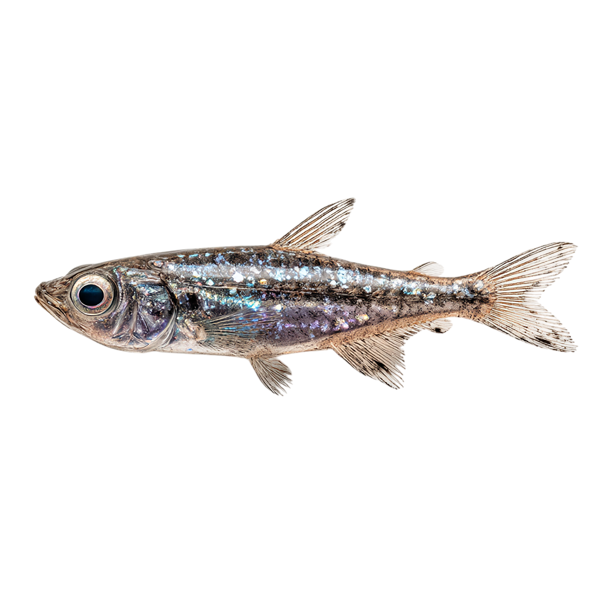
Lanternfish are small, deep-sea fish that live mostly between 200 and 1000 meters in the ocean’s twilight zone. Despite their size, they are among the most numerous vertebrates on Earth and play a crucial role in ocean ecosystems. Fun fact: If all lanternfish on Earth were weighed together, their total biomass would exceed that of all humans.
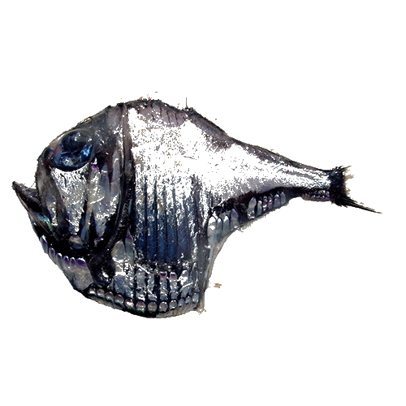
Hatchetfish have thin, flattened, silver bodies shaped like a blade. This unusual form helps them become nearly invisible when viewed from below. In the dim light of this depth, predators look upward for silhouettes, so the hatchetfish’s body reflects what little light remains and blends into the background. They also produce light from their undersides to erase their shadow. Their enormous upward-facing eyes are specialized to detect the faint outlines of prey above them. At this pressure and darkness, survival is about optical deception rather than speed.
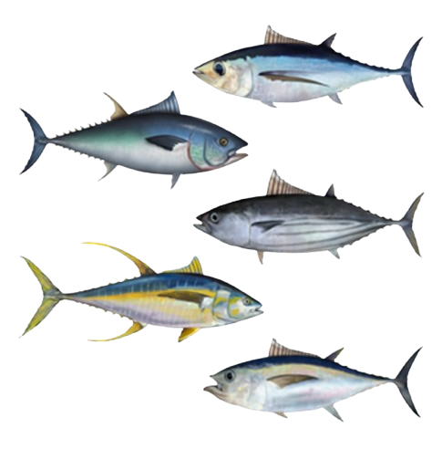
Tuna are powerful, fast-swimming predators that live in the sunlit surface waters of the ocean where light is abundant and life is dense. Their streamlined, torpedo-shaped bodies and stiff crescent tails are built for speed and long-distance travel. In this bright zone, vision dominates survival, so tuna rely heavily on eyesight to hunt schools of smaller fish like sardines and mackerel. The water here is rich in oxygen and supports photosynthesis, which feeds the entire food web below. Because food is plentiful, tuna maintain high metabolisms and must swim constantly to force water over their gills for breathing. They are perfectly adapted to a world of motion, light, and pursuit.
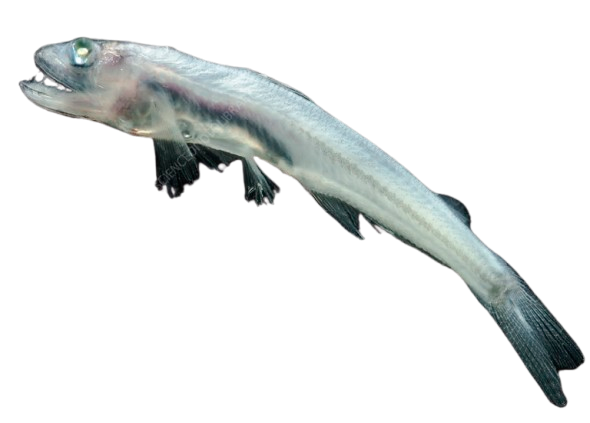
Pearleyes are predators adapted to detect prey from below using enormous, upward-facing eyes. Their eyes are tubular and extremely sensitive, allowing them to spot faint silhouettes against the dim light above. Unlike lanternfish, pearleyes rely less on bioluminescence and more on visual precision. In this layer, where shapes matter more than color, their entire hunting strategy is based on detecting movement against the last traces of sunlight.
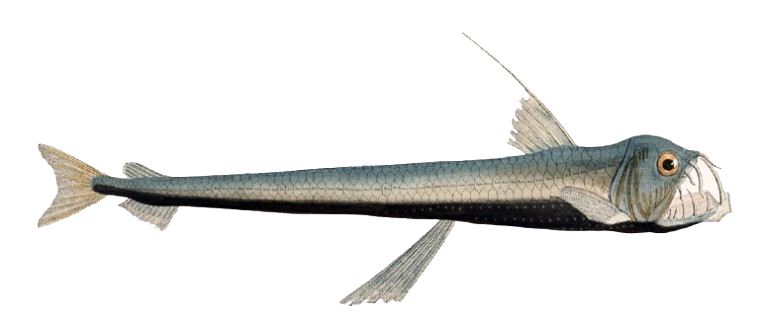
Sloane’s viperfish is an ambush predator with jaws so large its teeth cannot fully fit inside its mouth. It drifts nearly motionless, conserving energy, and uses a glowing lure to attract prey close enough to strike. Because food is already becoming scarce at this depth, each attack must succeed. Its exaggerated teeth and expandable jaw reflect a world where missing a meal can mean starvation.
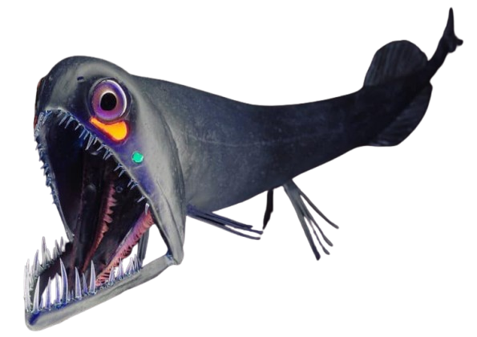
The stoplight loosejaw lives in dim water where almost no red wavelengths remain. It produces its own red bioluminescent light, which most other animals at this depth cannot see, allowing it to illuminate prey invisibly. Its lower jaw is loosely hinged and lined with needle-like teeth that trap small crustaceans and fish. This ability to see without being seen makes it a highly specialized predator in a zone where vision still matters but light no longer helps.
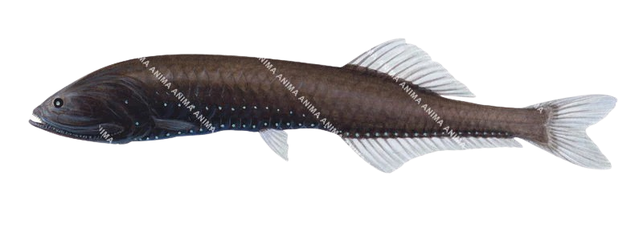
Bristlemouths continue to dominate numerically at this depth, surviving on tiny drifting organisms with minimal energy expenditure. Their small size and low oxygen requirements allow them to thrive where larger fish struggle. They communicate and camouflage using faint light from their photophores, blending into the dim surroundings rather than confronting them.
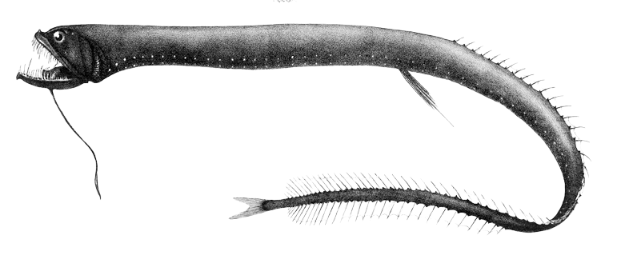
Dragonfish are elongated predators with transparent teeth that prevent reflections which could alert prey. A glowing barbel extends from their chin like a fishing line, luring animals within striking distance. They can also produce red light to scan the darkness privately. At this depth, hunting depends entirely on deception and specialized sensory tricks.
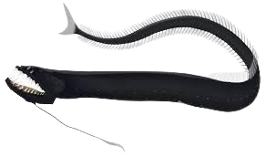
The black dragonfish drifts slowly with a dark, almost invisible body. Females are fearsome predators with long teeth, while males are tiny and short-lived. This extreme difference reflects how survival here prioritizes feeding efficiency over reproduction. The species is built for rare encounters that must end successfully.
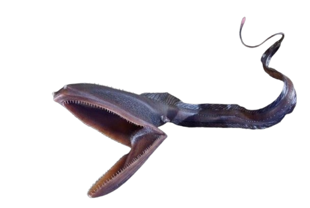
The gulper eel’s enormous mouth can open wide like a net, allowing it to swallow prey nearly its own size. Its body is mostly water and gelatinous tissue, reducing the metabolic cost of living under high pressure. It survives by drifting and exploiting rare feeding opportunities.
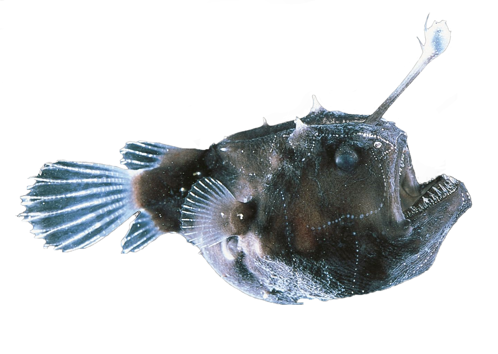
Anglerfish live in complete darkness and use a glowing lure protruding from their heads to attract prey. They are famous for extreme adaptations, including sexual parasitism where tiny males permanently attach to females. Their bodies are soft, their mouths enormous, and their teeth curved inward to prevent escape. In a world without light, survival depends on turning your own body into the bait.
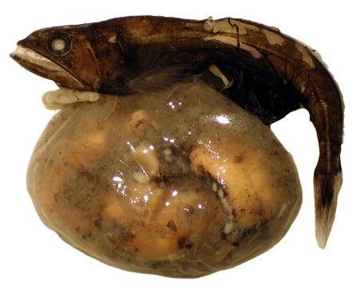
The black swallower can consume prey larger than itself due to an elastic stomach and flexible skeleton. After a rare meal, it may not need to feed again for weeks. Its dark coloration and slow metabolism are ideal for this deep, food-poor environment.
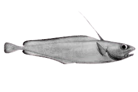
Morid cod move slowly near the seafloor, feeding mostly on dead or drifting organisms. They rely more on smell and touch than sight. Life here is slow, cold, and energy must be carefully conserved.
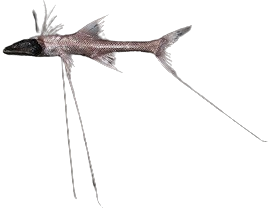
The tripod fish stands on elongated fin rays like stilts on the seafloor, facing the current. It waits for small animals or particles to drift into reach rather than swimming to find food. Its eyes are nearly useless, and it depends on sensing water movement.
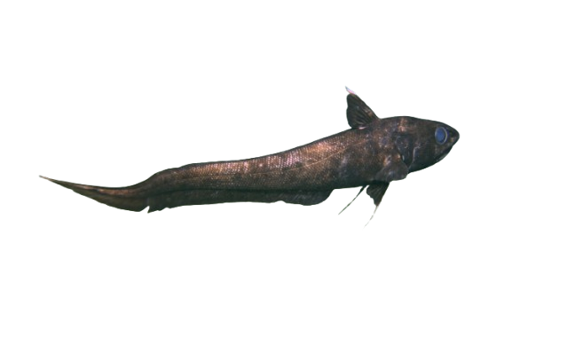
Grenadiers have large heads and long tapering tails, suited for slow cruising just above the bottom. They are scavengers, feeding on debris and carcasses that fall from above. Smell is far more important than sight at this depth.
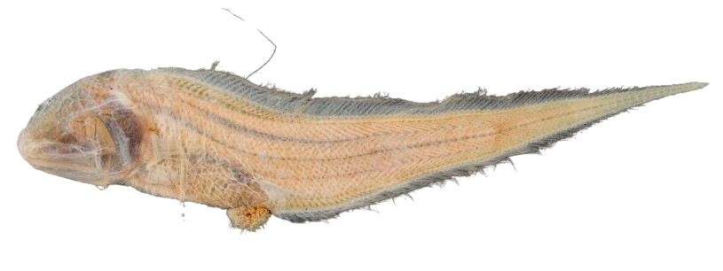
This eel-like fish scavenges slowly across the seafloor, feeding on whatever organic matter it encounters. Its movements are minimal, and its body is adapted to withstand crushing pressure with little energy use.
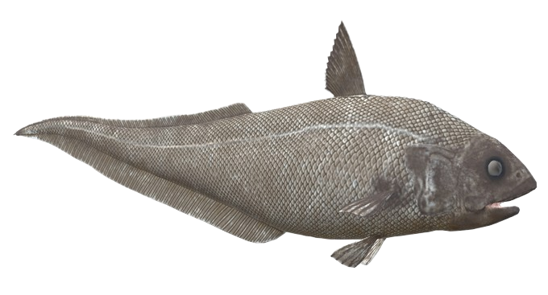
These fish patrol vast, empty plains of sediment, searching for rare food with a highly developed sense of smell. They expend little energy and can go long periods without eating.
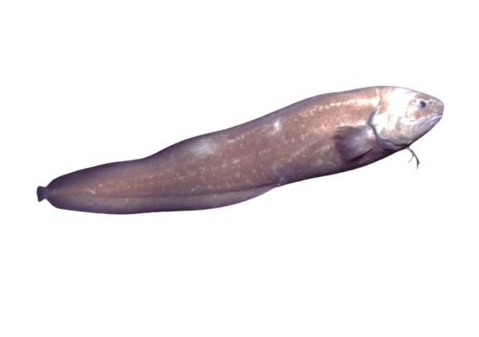
Cusk eels live close to the seabed, feeding on small invertebrates. Their elongated bodies and reduced musculature reflect the slow pace of life in this cold, dark world.
Cusk eels live close to the seabed, feeding on small invertebrates. Their elongated bodies and reduced musculature reflect the slow pace of life in this cold, dark world.
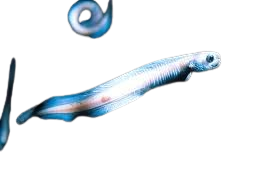
Eelpouts are slender, bottom-dwelling fish that tolerate immense pressure and cold. They feed on worms and crustaceans in the sediment, relying on touch rather than sight.

The yeti crab sports hairy arms and lives right next to boiling hot hydrothermal vents. These creatures were first observed by the research submarine Alvin south of Easter Island in 2005. Researchers soon realized they had discovered an entirely new genus of crustacean, Kiwa, named after the mythological Polynesian goddess of shellfish.
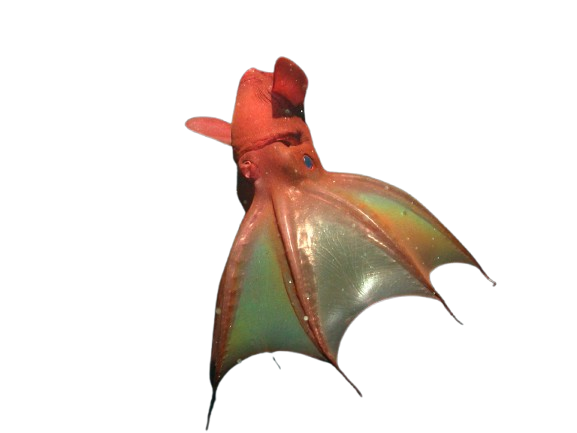
These creatures get their name from vampirish looks and webbed arms, which they can drape about the body like a cape. Despite their appearance and name, however, they don’t appear to behave in a fearsome manner; as researchers at the Monterey Bay Aquarium Research Institute discovered, they feed on bits of detritus called marine snow.
Credits
Abderahman Benaissa : Making the website
Axel Jordy Owona Ndigui : Making the website
1ere Ouverture à l'International : Providing information for the images